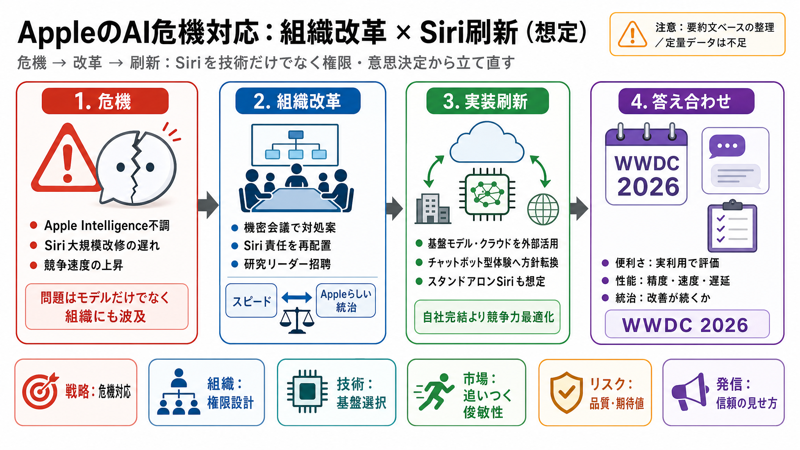

After Siri Upgrade Delay, Apple Announces New AI Chief | PCMag
Apple's AI chief, John Giannandrea, is stepping down and will be replaced by Amar Subramanya, Corporate VP of AI at Micr…

| 見え方 | 記事が言う実体 |
|---|---|
| Siriの改修 | 責任の所在・意思決定の流れ・実装速度の立て直し（権限設計） |
| 新体験 | 「チャットボット型の体験」を取り込み、期待値を市場に合わせる（方針転換） |
| 基盤モデル | モデル/クラウド中核の選択を変える（実装の現実解） |
Apple's AI chief, John Giannandrea, is stepping down and will be replaced by Amar Subramanya, Corporate VP of AI at Micr…
... Amar Subramanya as its second-ranking AI leader ... New Releases Apple AI strategy Apple Intelligence Craig Federigh…
Monday's WWDC keynote address is expected to be heavy on AI features in iOS 27 and Apple's other operating systems. The …
Mike Rockwell, previously vice president of the Vision Products Group, has been appointed to lead Siri, replacing John G…
# Apple just named a new AI chief with Google and Microsoft expertise, as John Giannandrea steps down. In a carefully wo…